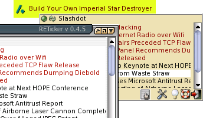

RETicker v. 0.4.5

Here is a list of available Manuals. If you like to translate the manual in any missing language, please feel free to contact me.
Anleitung in deutsch (html)
Please report any comments or offers for translation to rene_ejury at gmx do net.